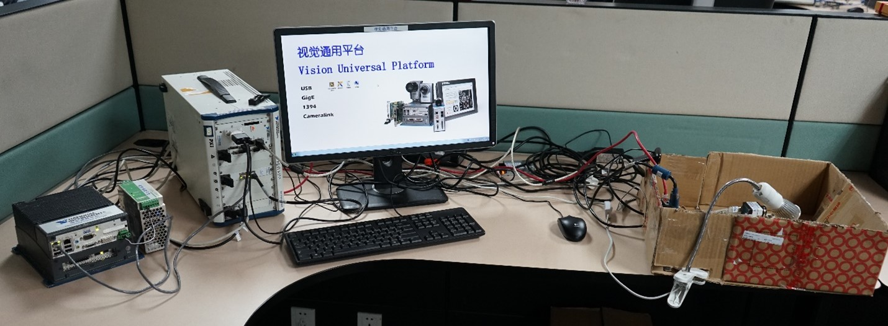

Vision General Trainging Platform

The Vision Universal Platform is designed to provide training for new graduate Applications Engineers in National Instruments China. Its purpose is to offer a comprehensive introduction to various types of cameras and processing units, enabling engineers without prior hardware experience to easily acquire knowledge about vision systems, NI Vision software, and gain hands-on experience.
Cameras:
GigE: BIP2-1000C-DN
USB: Logitech Web Camera
1394a: Prosilica EC1020
1394b: Basler SCA1600-14FM
Embedded Camera: ISC-1742 Smart Camera
Camera link: (Planning)
Processing Hardware:
Windows System: NI PXIe-8106 Embedded Controller + PXIe-1062 Chassis
Embedded System: EVS-1464RT Embedded Vision System